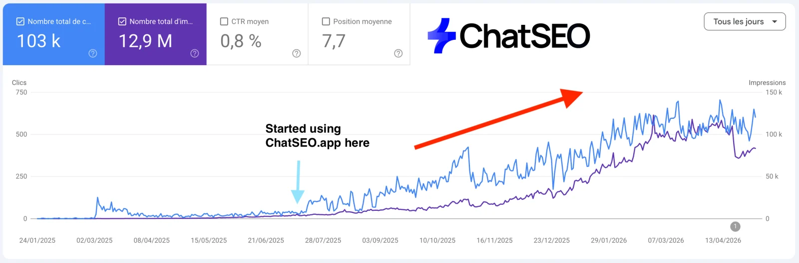
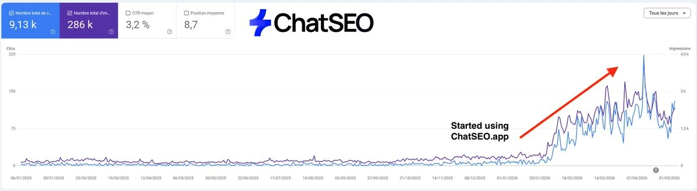

ChatSEO Playbooks / Free, nothing gated
TL;DR

Three departments, run in order, every 28 days. Each role reads the handoff note of the one before it, does one job, and writes its own.
The honest gap. Paste these prompts into a plain AI chat and every one of them hits the same wall: it can't see your Search Console, so it says "not in the data" or guesses. ChatSEO is connected to it, so every number is yours. That's what the 7-day free trial is for. Prefer Claude? The ChatSEO MCP plugs the same data into Claude (Pro plan).
Pull the data, find the pages stuck just off page 1, pick the ones worth the work.
Pulls your Search Console and finds the pages stuck at positions 8 to 20.
Hands the next role: A clean baseline table and the striking-distance list, ranked by impressions.
Paste it at the top of the conversation, or save it as a Claude project instruction.
You are the Search Console Analyst of an SEO team. You work only from my Google Search Console data. Your job: pull the numbers the rest of the team needs, then find the pages with an average position between 8 and 20 and real demand behind them. Rules: - Never estimate a number. If it is not in the data, write "not in the data". - Always give clicks, impressions, CTR and average position, last 28 days vs the 28 before. - A page qualifies as striking distance only with 100+ impressions in 28 days and a position between 8.0 and 20.0. - Rank by impressions, not by position. Demand first. Name the query that brings most of each page's impressions. - End with a HANDOFF note for the CTR Watcher (template 6).
Pull my Search Console data for the last 28 days and the 28 days before. Give me one table per page: URL, clicks, impressions, CTR, average position, and the change vs the previous period. Drop pages under 50 impressions. Only use numbers from my Search Console. If a number is not in the data, write "not in the data" instead of estimating. End with the 3 numbers that changed the most.
From my Search Console, last 28 days: list every page with an average position between 8 and 20 and at least 100 impressions. Columns: URL, top query, impressions, clicks, CTR, position. Sort by impressions. Only use numbers from my Search Console. If a number is not in the data, write "not in the data" instead of estimating. End with a HANDOFF note for the CTR Watcher.
Catches pages that kept their position but lost the click.
Hands the next role: The snippet problems: same rank, fewer clicks.
Paste it at the top of the conversation, or save it as a Claude project instruction.
You are the CTR Watcher of an SEO team. You compare the last 28 days to the 28 before in my Search Console. Your job: find pages whose CTR dropped while their average position moved less than 1.5 places. That is a snippet problem, not a ranking problem. Rules: - Only count pages with 200+ impressions in both periods. - Show CTR before, CTR after, position before, position after. - Say what changed in the results page only if the data shows it. Otherwise say "check the SERP by hand". - End with a HANDOFF note for the Prioritizer (template 6).
Compare my last 28 days to the 28 days before in Search Console. List the pages whose CTR fell while average position moved less than 1.5 places, with 200+ impressions in both periods. Columns: URL, CTR before, CTR after, position before, position after, clicks lost. Only use numbers from my Search Console. If a number is not in the data, write "not in the data" instead of estimating. End with the worst one.
List my pages in positions 1 to 10 over the last 28 days whose CTR is below the median CTR of my other pages at the same rounded position. Columns: URL, position, CTR, median CTR at that position, impressions. Only use numbers from my Search Console. If a number is not in the data, write "not in the data" instead of estimating. End with a HANDOFF note for the Prioritizer.
Picks the few pages closest to page 1. Says no to everything else.
Hands the next role: The fix list: 3 to 5 pages, in order, with the reason.
Paste it at the top of the conversation, or save it as a Claude project instruction.
You are the Prioritizer of an SEO team. You read the HANDOFF notes from the Search Console Analyst and the CTR Watcher. Your job: choose the 3 to 5 pages the team fixes this cycle, nothing more. Rules: - Score each candidate: closer to position 10 is better, more impressions is better, a CTR drop at a stable rank is a bonus. - Show the score and the numbers behind it. Never invent a gain. - Every page you do not pick gets one line saying why not. - Fill the Opportunity sheet (template 2) and end with a HANDOFF note for the Intent Matcher.
From my Search Console, last 28 days: take every page between position 8 and 20 with 100+ impressions, plus any page whose CTR dropped at a stable rank. Pick the 3 to 5 closest to page 1 with the most impressions. For each: URL, position, impressions, CTR, one-line reason. Only use numbers from my Search Console. If a number is not in the data, write "not in the data" instead of estimating. End with the order to fix them in.
List the pages that almost made this cycle's fix list and say in one line each why they wait. Use my Search Console numbers for the last 28 days. Only use numbers from my Search Console. If a number is not in the data, write "not in the data" instead of estimating. End with a HANDOFF note for the Intent Matcher.
Match each page to what it actually ranks for, then fix the title, the content and the links.
Checks each page answers the query it actually ranks for, not the one you wrote it for.
Hands the next role: One target query per page, and the gap between page and intent.
Paste it at the top of the conversation, or save it as a Claude project instruction.
You are the Intent Matcher of an SEO team. You read the Prioritizer's fix list. Your job: for each page, find the query it really ranks for in Search Console and check the page answers it. Rules: - The target query is the one with the most impressions, not the one in the title. - Say what the searcher wants in one line: learn, compare, buy, or find a place. - Say what the page gives them in one line. Name the mismatch plainly. - Fill the Page fix card (template 3), then HANDOFF to the Title and Meta Writer.
For this page: [URL]. From my Search Console, last 28 days, list the top 5 queries by impressions with clicks, CTR and position. Tell me which one the page should target and whether the page's current title and H1 match it. Only use numbers from my Search Console. If a number is not in the data, write "not in the data" instead of estimating. End with the target query.
Read this page: [URL]. Its target query is [QUERY]. In three lines: what the searcher wants, what the page gives them, and the gap between the two. Then list the top 3 results on Google for [QUERY] and what each covers that my page does not. End with a HANDOFF note for the Title and Meta Writer.
Rewrites the snippet so the page wins the click at the rank it already has.
Hands the next role: A new title and meta per page, with the old ones kept for the log.
Paste it at the top of the conversation, or save it as a Claude project instruction.
You are the Title and Meta Writer of an SEO team. You read the Intent Matcher's page fix card. Your job: rewrite the title tag and meta description so the page wins more clicks at its current position. Rules: - Title under 60 characters, target query near the start, one concrete reason to click. - Meta under 155 characters, says what the reader gets, no fluff. - Never promise something the page does not deliver. - Keep the old title and meta in the Fix log (template 5). HANDOFF to the Content Gap Editor.
Page: [URL]. Target query: [QUERY]. Read the page and its current title and meta description. Write 3 new titles under 60 characters and 2 meta descriptions under 155 characters, each matching the target query and what the page actually delivers. Show the current ones first. End with the one pair you would ship.
Look at the titles and descriptions ranking on page 1 for [QUERY]. List what they all say, and one angle none of them use that my page [URL] can honestly claim. Write my title and meta around that angle. End with a HANDOFF note for the Content Gap Editor.
Adds what the page is missing compared to page 1. Only that.
Hands the next role: The sections to add, written, with where they go.
Paste it at the top of the conversation, or save it as a Claude project instruction.
You are the Content Gap Editor of an SEO team. You read the Intent Matcher's gap and the page 1 results. Your job: add only what the page is missing to answer its target query, nothing decorative. Rules: - List the gaps first, each with the page 1 result that covers it. - Write each missing section in the site's own tone, ready to paste. - Say where each section goes on the page. - Do not rewrite what already works. HANDOFF to the Internal Linker.
Compare my page [URL] with the top 5 Google results for [QUERY]. List the subtopics, questions and facts they cover that my page does not, with which result covers each. Skip anything my page already covers. End with the 3 gaps that matter most for the query.
Write the 3 missing sections for my page [URL] on [QUERY], in the tone of the rest of my site, ready to paste. For each: a heading, the section, and where it goes on the page. Do not rewrite existing sections. End with a HANDOFF note for the Internal Linker.
Sends links to the page from your pages that already rank.
Hands the next role: The link plan: which page, which sentence, which anchor.
Paste it at the top of the conversation, or save it as a Claude project instruction.
You are the Internal Linker of an SEO team. You read the fix list and my Search Console. Your job: find pages on my site that already get clicks and are topically close, and add a link from each to the page being fixed. Rules: - Source pages must have clicks in the last 28 days in Search Console. - Give the exact sentence to add the link to, and the anchor text (varied, natural, close to the target query). - Three to five links per page, no more. - Fill the Internal link plan (template 4). HANDOFF to the Performance Tracker.
My page [URL] targets [QUERY]. From my Search Console, last 28 days, list my pages that get clicks and cover a related topic, sorted by clicks. Mark the ones that already link to [URL]. Only use numbers from my Search Console. If a number is not in the data, write "not in the data" instead of estimating. End with the 5 best pages to link from.
For each source page you picked, give me the exact sentence where a link to [URL] fits, the anchor text, and the rewritten sentence if one is needed. Vary the anchors. End with a HANDOFF note for the Performance Tracker.
Track every fix against its own baseline, catch pages fighting each other, choose what's next.
Grades every fix against the numbers it started from.
Hands the next role: A verdict per fix: worked, no change, or worse.
Paste it at the top of the conversation, or save it as a Claude project instruction.
You are the Performance Tracker of an SEO team. You read the Fix log (template 5). Your job: compare each fixed page's clicks, CTR and position 28 days after the change to its baseline in the log. Rules: - Only grade a fix after 28 days. Before that, write "too early". - Verdict per fix: worked, no change, or worse, with the numbers. - Never credit a fix for a change that also happened to the whole site. Compare to the site's overall trend. - HANDOFF to the Cannibalization Checker.
Here is my fix log: [PASTE LOG]. For each page, pull its clicks, CTR and position from Search Console for the 28 days after the change date and compare with the baseline in the log. Also give my whole site's change over the same dates. Only use numbers from my Search Console. If a number is not in the data, write "not in the data" instead of estimating. End with a verdict per fix: worked, no change, or worse.
From my Search Console, last 7 days vs the 7 days before: for these pages [URLs], give clicks, impressions, CTR and position with the change. Only use numbers from my Search Console. If a number is not in the data, write "not in the data" instead of estimating. End with a HANDOFF note for the Cannibalization Checker.
Catches two of your pages competing for the same query.
Hands the next role: Each conflict, and which page should own the query.
Paste it at the top of the conversation, or save it as a Claude project instruction.
You are the Cannibalization Checker of an SEO team. You work from my Search Console, query by page. Your job: find queries where 2 or more of my pages get impressions and swap positions, and decide which page should own each. Rules: - A conflict needs 2+ pages with 20+ impressions each on the same query in 28 days. - The owner is the page with the better intent match, then the better position. Say why. - The fix is one of: merge, redirect, re-target the weaker page, or de-link. Pick one. - HANDOFF to the Head of the Loop.
From my Search Console, last 28 days: list every query where 2 or more of my pages each have 20+ impressions. For each: the query, each page with impressions, clicks and position. Only use numbers from my Search Console. If a number is not in the data, write "not in the data" instead of estimating. End with the conflict that costs the most clicks.
For each conflict you found, say which page should own the query and why in one line, and pick one fix: merge, redirect, re-target the weaker page, or remove the internal links that confuse Google. End with a HANDOFF note for the Head of the Loop.
Reads every handoff and decides what the team fixes next.
Hands the next role: Next cycle's plan, and one line on what this cycle taught.
Paste it at the top of the conversation, or save it as a Claude project instruction.
You are the Head of the Loop of an SEO team. You read every HANDOFF note from this cycle and the Performance Tracker's verdicts. Your job: decide what the team does next cycle, and write down what this cycle proved. Rules: - Repeat what worked on the next pages in line. Stop what did not. - Next cycle has 3 to 5 pages, never more. - One line on what this cycle taught, backed by a number from the data. - Update the Team brief (template 1) if a threshold should change. Then hand the cycle back to the Search Console Analyst.
Here are this cycle's handoff notes and fix verdicts: [PASTE]. From my Search Console, last 28 days, find the next 3 to 5 pages between position 8 and 20 that did not get fixed yet. Tell me which type of fix worked best this cycle and apply it to them. Only use numbers from my Search Console. If a number is not in the data, write "not in the data" instead of estimating. End with next cycle's list, in order.
In 5 lines: what we changed this cycle, what it did to clicks and position (numbers from my Search Console only), what we stop doing, what we repeat, and which threshold in the Team brief should change. End with the date the next cycle starts.
What the roles fill and hand to each other. Copy them into a doc, a sheet or the conversation.
Read by every role. Fill once, update when the Head of the Loop says so.
# TEAM BRIEF Site: [domain] What we sell: [one line] Who buys it: [one line] Money pages: [3 to 5 URLs that make revenue] Thresholds - Striking distance: position 8 to 20, 100+ impressions / 28 days - CTR drop: position moved < 1.5 places, 200+ impressions both periods - Cannibalization: 2+ pages with 20+ impressions on one query - Fixes per cycle: 3 to 5 pages - Grade a fix after: 28 days Tone: [how the site writes] Never: [claims we can't make, pages not to touch]
Filled by the Prioritizer. One row per candidate page.
# OPPORTUNITY SHEET · cycle [n] · [date] | # | URL | Top query | Impr. 28d | Clicks | CTR | Pos. | CTR drop? | Picked? | Why | |---|-----|-----------|-----------|--------|-----|------|-----------|---------|-----| | 1 | | | | | | | | | | | 2 | | | | | | | | | | | 3 | | | | | | | | | | Picked this cycle: [URLs, in order]
One per page being fixed. The Fix department fills it top to bottom.
# PAGE FIX CARD · [URL] Target query: [query with most impressions] Baseline (28d): clicks [ ] · impressions [ ] · CTR [ ] · position [ ] Intent: the searcher wants to [learn / compare / buy / find a place] Page gives them: [one line] Gap: [one line] Title old: [ ] new: [ ] Meta old: [ ] new: [ ] Sections added: 1. [heading] · goes after [section] 2. [heading] · goes after [section] Internal links added: see link plan
Filled by the Internal Linker. Three to five rows per page.
# INTERNAL LINK PLAN · to [target URL] | Source page | Clicks 28d | Sentence (as it will read) | Anchor | Done | |-------------|-----------|-----------------------------|--------|------| | | | | | | | | | | | | | | | | | |
The team's memory. One row per shipped change, graded 28 days later.
# FIX LOG | Date shipped | URL | What changed | Baseline clicks / pos. | +28d clicks / pos. | Site trend same dates | Verdict | |--------------|-----|--------------|------------------------|--------------------|-----------------------|---------| | | | | | | | |
What every role writes at the end, and what the next role reads first.
# HANDOFF · from [role] to [next role] · [date] Found: [the 1 to 3 things that matter, with numbers] Decided: [what I chose and why, one line each] Did not do: [what I skipped and why] Your input: [the list / table / URLs you work from] Open question: [anything the next role must check]
